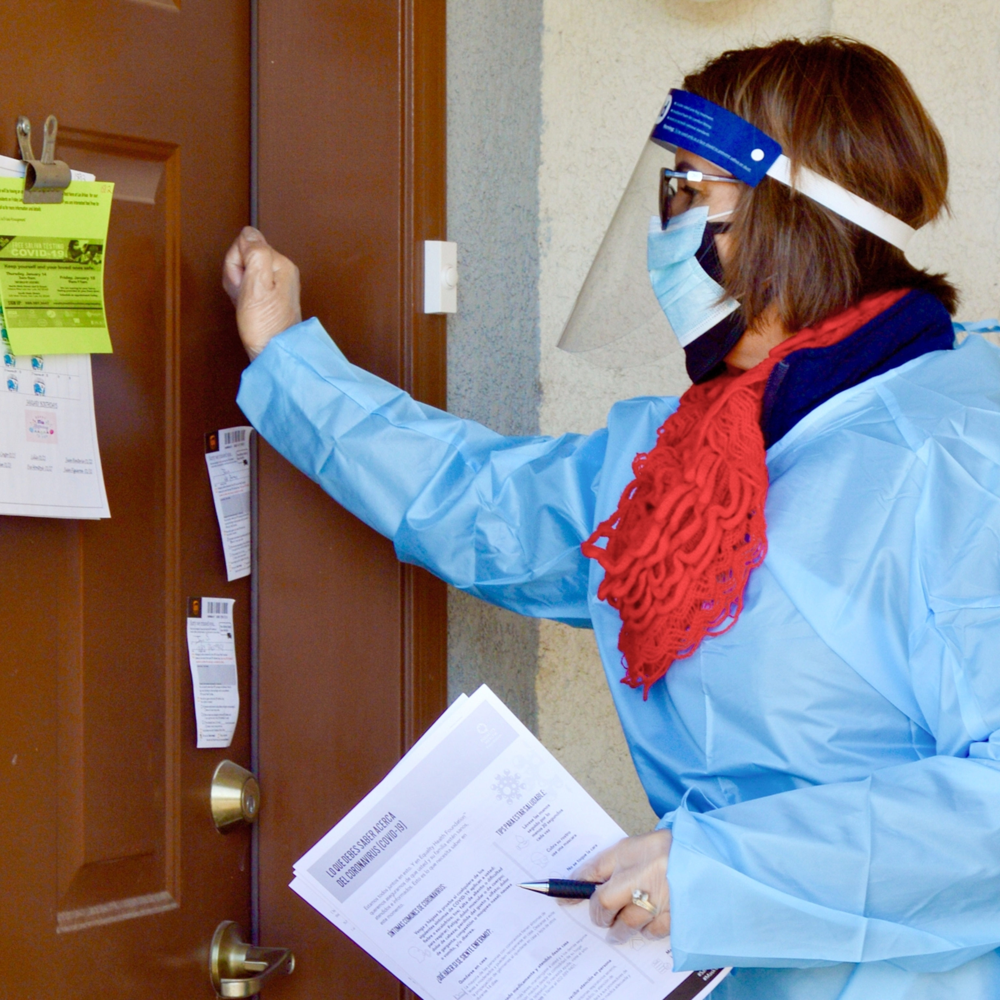

Magazine
What are Animals thinking?
Read

Magazine from the editor
Why we set out to uncover the mysteries of animal minds.
Read
Magazine from the editor
How these two photographers got inside the minds of animals
Read
Today's Picks

History & Culture
out of eden walk
Ancient towers keep secrets on a walk through southwest China
Science
Why the equinox ushers in the arrival of fall
History & Culture
The history and traditions of Rosh Hashanah

Science
CORONAVIRUS COVERAGE
Amid COVID. Latino immigrants put trust in their 'promotoras'

Animals
Why these furry male mammals sing with humanlike rhythm
HISTORY MAGAZINE
Queen Elizabeth II: A lifetime of devotion and service